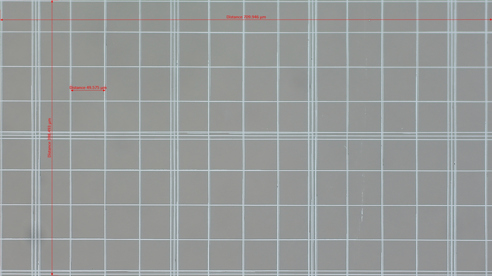
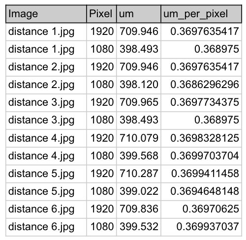

Column 4 formula - um_per_pixel
Conversion for micrometer/pixel
Column3/Column2 = um/Pixel
Example row 1:
um_per_pixel = 709.946/1920 = 0.3697635417

| Statistic | Value |
|---|---|
| mean: | 0.369561048418 |
| std: | 0.000451175100 |
| median: | 0.369763541667 |
| mode: | 0.369763541667 |
Recommended to select median to reduce the effect of outliers and skewed distributions.
The main configuration file used to customise the AI engine for cell measurement is pipelines.yml, located in conf/life3 subfolder.
Under inference: Change the parameter um_pixel_mapping according to selected parameter such as median value.
um_pixel_mapping: 0.369763541667
small_mid_cell_cutoff: 4.0
mid_large_cell_cutoff: 8.0
use_calibrated_cellsize: True
small_mid_cell_cutoff and mid_large_cell_cutoff refer to value1 and value 2 in shown below. The value is the cutoff point between 2 cell of different size. User can defined the values according to their requirements or scientific findings.
To make the model more accurate in terms of cell size counting, user can set use_calibrated_cellsize to True which will use the calibrated value instead of small_mid_cell_cutoff and mid_large_cell_cutoff
The calibrated cellsize can be found in conf/calibrated_cellsize.csv